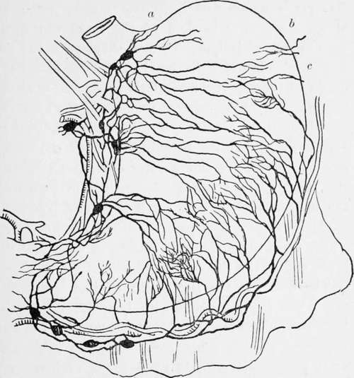

The Stomach Chamber
Description
This section is from the book "Cancer Of The Stomach", by A. W. Mayo Robson, D.Sc, F.R.C.S.. Also available from Amazon: Cancer of the Stomach.
The Stomach Chamber
The stomach chamber is a well-defined space in the upper abdomen occupied by the stomach. It has a sloping floor which is known as the stomach bed, composed of the front of the left kidney, the left supra-renal capsule, the gastric surface of the spleen, the upper surface of the pancreas, the transverse colon and the mesocolon, the lesser sac of the peritoneum intervening between these and the wall of the stomach except for a small area near the cardiac end where the stomach lies in direct contact with the diaphragm above the left supra-renal body. The roof of the stomach chamber is dome-like and is formed by part of the under surface of the liver, the left cupola of the diaphragm and the anterior abdominal wall.
It is interesting to note that a part of the under surface of the heart, near the apex, is only separated from the stomach by the pericardial sac, the left cupola of the diaphragm and the peritoneum.
The gastro-hepatic omentum, composed of two peritoneal layers, extends between the lesser curvature of the stomach and the liver, and in its right border, which is free, run the common bile-duct, portal vein and hepatic artery, this free border with its contents forming the front boundary of the foramen of Winslow.
If this suspensory ligament of the stomach is abnormally long it allows the stomach to descend below its normal level, giving rise to gastroptosis, in which case the pancreas can be seen through the peritoneal folds above the lesser curvature of the stomach.
The gastro-phrenic omentum is a small, double fold of omentum extending' between the upper border of the stomach on the left of the cardiac orifice and the diaphragm.
The gastro-splenic omentum is a double layer of peritoneum extending between the left border of the great curvature of the stomach and the spleen. It contains between its folds the left gastro-epiploic artery.
The great omentum is formed by the meeting of the two layers of peritoneum which have enveloped the stomach and united at the lower border, whence it extends downwards like a veil in front of the transverse colon and small intestine, returning to the transverse colon, which it encloses; it then passes back to the spine as the transverse mesocolon, an important structure in the operation of posterior gastro - enterostomy. The stomach is thus enveloped by a single layer of peritoneum, the two layers of omentum splitting to enclose it, and uniting below to form the great omentum.
The investment is intimate everywhere except at the margins, along which the large vessels run tortuously, loosely enveloped in the cellular tissue intervening between the two peritoneal layers.
The muscular coat consists of unstriped muscular fibres arranged in three more or less distinct lavers, longitudinal, circular and oblique. Of these three that which is of special interest is the middle layer. This, toward the pylorus, becomes thicker and stronger and when it reaches the exit from the stomach the circular fibres are heaped up so as to project inward into the lumen of the passage and form a distinct sphincter. Under normal circumstances the calibre of the pyloric orifice has a diameter of rather less than half an inch, this diminution in the calibre being caused entirely by the increase of the circular muscular fibres, the bulk of the longitudinal fibres taking no part in the process, but passing on into the first part of the duodenum, some of them, however, dipping in to join the circular fibres.
The submucous coat is composed of areolar tissue, and is the tunic in which the larger arterioles break up. The submucous tissue does not bind the mucous membrane very closely to the muscular layer, but permits considerable sliding of one coat upon the other.
The mucous membrane, which is thickest in the pyloric region and thinnest in the great sac, is richly supplied with glands. The whole interior of the stomach is covered by a single layer of columnar epithelial cells. Scattered throughout the mucous membrane, but most abundant towards the pylorus, are small masses of lymphoid tissue, which are of importance as occasionally ulcerating in Hodgkin's disease.
The blood supply of the stomach, which is very free, is from the three branches of the coeliac axis. The coronary artery of the stomach reaches the viscus at the cardiac end, and after giving off branches to the lower part of the oesophagus it runs along the lesser curvature from left to right, and anastomoses with the pyloric branch of the hepatic artery. From the hepatic artery two branches supply the stomach. The smaller of these, the pyloric branch, reaches the stomach at the upper margin of the pylorus, and passes towards the left along* the lesser curvature to inosculate with the terminal branches of the coronary artery. The larger, the gastro-duodenal artery, passes behind the first part of the duodenum close to the pylorus, and after giving off the superior pancreatieo-duodenal branch continues from right to left along the greater curvature of the stomach as the right gastroepiploic artery. The splenic artery runs along the upper margin of the pancreas from right to left, and supplies several small branches to the stomach before it gives rise to the left gastro-epiploic artery, which lies between the layers of the gastro-epiploic omentum, and is continued along the great curvature of the stomach to anastomose with the terminal branches of the right gastro-epiploic artery.
From the two arches thus formed at the upper and lower margins of the stomach vessels pass at right angles to supply the body of the viscus. The ultimate branches of these form the intricate network of the inter-glandular tissue, and from the capillaries round the mouths of the glands the veins take origin. These in the mucous membrane are fewer but larger than the arteries. They form a plexus in the submucous tissue, and then pass along with the arteries to form larger veins corresponding to the large arteries already described-viz. coronary, left and right gastroepiploic and pyloric veins. These all empty into the portal vein either directly, as in the case of the pyloric and coronary veins, or by joining the superior mesenteric or splenic veins.
In Mikulicz's clinic, attention was drawn to the fact that part of the venous blood from the stomach, instead of passing through the portal vein so as to be sterilised by the liver, is returned directly through the vascular anastomoses about the cardiac orifice. This may, perhaps, account for some cases of embolic pneumonia in stomach diseases.
The lymphatics of the stomach, which are very numerous, arise in intimate relation with the gland tubules. They form a plexus of dilated lymph sinuses in the submucous tissue and then pass toward the upper and lower margins, where they traverse a number of lymphatic glands which lie along the gastric borders of the small and great omenta respectively. Thence they pass to the coeliac glands which lie beside the aorta above the origin of the superior mesenteric artery, those of the lesser curvature following the course of the coronary vessels until the cardiac orifice is reached, when they turn down behind the pancreas to reach the cceliac glands. Those on the greater curvature run with the right gastro-epiploic vessels, and in part with the splenic vessels, and reach the same lymphatic glands. Thence they pass together with the vessels which drain the mesenteric glands, to open into the lower end of the thoracic duct.
Fig. 1.-The lymphatics of the stomach. (Modified after Cuneo). a, b, c, glands shown by J. F. Dobson to exist in the splenic omentum and on the left of the cardiac orifice.
The dome, to the left of the cardiac opening, is much less freely supplied with lymphatics than the body and pyloric section of the stomach. This has an important bearing when considering the subject of total gastrectomy, for in some cases, even when a great part of the stomach is affected by the growth, it may be safe to leave a portion of the cardiac end and the dome.
The nerves of the stomach, derived from the terminal branches of both pncumogastrics and from S3mipathetic branches of the solar plexus, are very abundant, and not only account for the very severe pain caused by ulceration, but also for the severe collapse produced by injury, though it is a mistake to suppose that manipulation of the pylorus is attended by the severe shock suggested by the experiments made by Dr. Crile, for in many cases I have freely handled the stomach and pylorus and operated on them without the patient experiencing more shock than would be expected after any abdominal operation. When the pylorus is adherent and the parts have to be much dragged on, severe shock is not infrequently seen, but this is due to interference with the large sympathetic nerves and ganglia behind the pylorus.
The relation of the sympathetic nerves with the seventh, eighth, and ninth spinal roots accounts for the superficial tenderness of the epigastrium in ulceration, and for the reflected left shoulder-bladu pain. This is well shown in pyloric adhesions complicating cholelithiasis, where, though the pain is originally on the right passing to the right infra-scapular region, as soon as the pylorus becomes involved in the inflammation or tied down by adhesions the pain passes also to the left subscapular region.
Continue to:
- prev: Chapter II. Surgical Anatomy Of The Stomach
- Table of Contents
- next: Chapter III. General Diagnosis Of Stomach Diseases, Including Cancer
Tags
stomach, operation, cancer, tumour, ulcer, gastric, gastrectomy